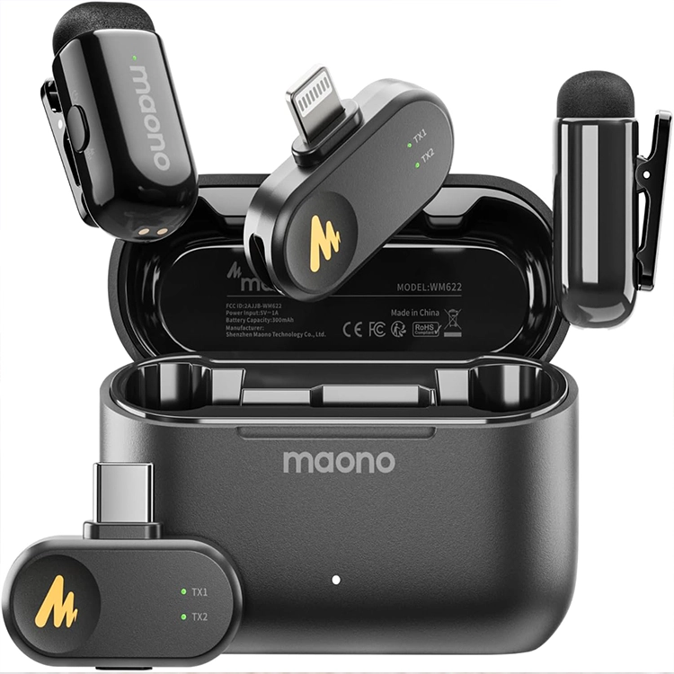

Maono Wave T1
Crea contenido sin límites, con una calidad de sonido que llevaran tus videos al siguiente nivel.
$56.00 USD
- Ultracompacto y portátil, mientras que ofrece un sonido de calidad de estudio de 48 kHz/16 bits.
- Cancelación de ruido AI de 4 niveles: el micrófono inalámbrico de solapa Wave T1 admite un clic para encender/apagar la reducción de ruido.
- Duración de la batería extendida de 30 horas: con estuche de carga compacto, este pequeño micrófono puede funcionar hasta 30 horas.
- Transmisión estable de 328 pies: Plug-and-play y ofrece una conexión ininterrumpida de 328 pies sin caídas de señal.
- Filtros de voz y efectos de inteligencia artificial: con la aplicación Maono Link, puedes cambiar entre 4 filtros de voz únicos y 4 efectos de alteración de voz para un audio creativo y personalizado.
- Esencial para la creación de contenido: El micrófono mini lav T1 incluye receptor Lightning y USB-C certificado MFI, compatible con iPhone, teléfono Android, iPad y tabletas, Windows y Mac PC.
- Como emparejarlo: mantén presionado el botón de cancelación de ruido/emparejamiento para apagar el dispositivo. Luego, mantenga presionado el mismo botón nuevamente hasta que la luz azul parpadee rápidamente (nota: después de apagarse, la luz azul parpadeará lentamente 3 veces antes de entrar en el modo de parpadeo rápido). Tanto el receptor como el transmisor deben estar en modo de parpadeo rápido para emparejarse correctamente.